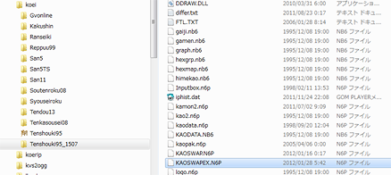

デフォルトの天翔記には無い有志制作のシナリオ群は、導入が簡単なものから難しいものまで様々です。
ここではその中で1507年シナリオの導入例を見ていくことで、独自シナリオの導入の基本筋をモノにしましょう。
TSMod(の最新版)を導入しているものとする。
下図の例は、通常の天翔記ディレクトリ｢tenshouki95｣をコピーして、｢tenshouki_1507｣というディレクトリを用意したものです。

有志制作のシナリオの多くは、デフォルトの天翔記のシナリオと同居出来ないため、このような方法が安全です。
これによって、シナリオ製作者の用意したデータ反映出来ました。(※ほとんどの独自シナリオはここまでで導入は完了します。)
これによって、列伝データが反映されました。
TSModが武将人数1932人モードで動作可能なように、KAOSWAPEX.N6Pを導入します。
その内容はコチラで説明されています。
1507年シナリオは武将人数が1700人程度であるため、導入する必要があります。
Sn1507.dllを「tenshouki_1507」ディレクトリへコピーすることで1507年シナリオ専用のシナリオ名にすることが可能です。
1507年シナリオの元となる、信長の野望・蒼天録の顔グラ・音などを有志が作成しています。
より一層楽しみたい方は導入してみると良いでしょう。